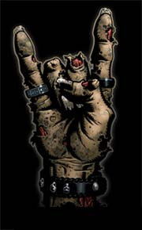

Friday, October 14 2005

Here at Valve, we like zombies. They're dead, but they're not. They have simple tastes. They pursue their goals with an unwavering, if shambling, intensity. Having populated Half-Life and Half-Life 2 with a variety of them, we hope (and suspect) you share our affinity for these unfairly maligned creatures.
Of course, long before the denizens of the undead world began to grace
games with their gruesome antics, they were already stars of the silver screen. So, this week we're stepping outside of our usual focus to tell you about our new favorite short film. It's called
Zombie Movie.
A Valve employee named Mike Asquith is one of
2chums, who made the movie. Its official world-premiere is tomorrow (Saturday October 15) at
Screamfest L.A. (click for show time and details), and we think that every Steam user in the area should be there. Ideally, attendance should reach call-the-fire-marshal levels. Be sure to say hi to Mike when you see him at the screening. (And just so you don't feel the need to ask him personally when HL2 Lost Coast is going to be released: we're shooting for the end of the month.)